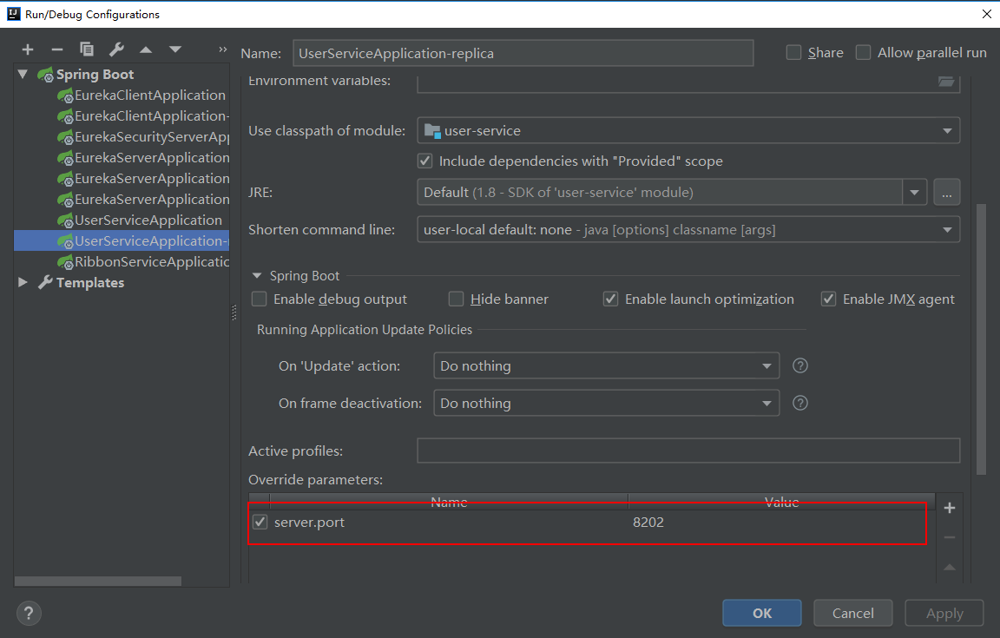
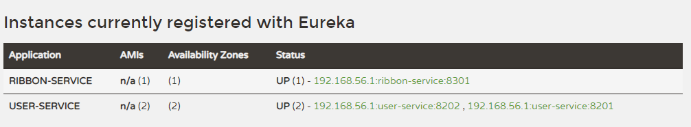
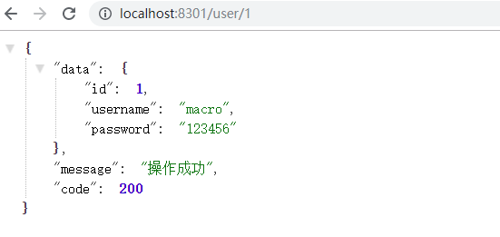
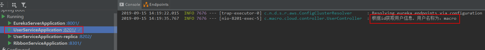
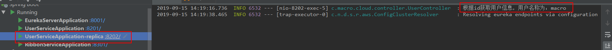

学习不走弯路，关注公众号 回复「学习路线」，获取mall项目专属学习路线！
Spring Cloud Ribbon：负载均衡的服务调用
Spring Cloud Ribbon 是Spring Cloud Netflix 子项目的核心组件之一，主要给服务间调用及API网关转发提供负载均衡的功能，本文将对其用法进行详细介绍。
Ribbon简介
在微服务架构中，很多服务都会部署多个，其他服务去调用该服务的时候，如何保证负载均衡是个不得不去考虑的问题。负载均衡可以增加系统的可用性和扩展性，当我们使用RestTemplate来调用其他服务时，Ribbon可以很方便的实现负载均衡功能。
RestTemplate的使用
RestTemplate是一个HTTP客户端，使用它我们可以方便的调用HTTP接口，支持GET、POST、PUT、DELETE等方法。
GET请求方法
<T> T getForObject(String url, Class<T> responseType, Object... uriVariables);
<T> T getForObject(String url, Class<T> responseType, Map<String, ?> uriVariables);
<T> T getForObject(URI url, Class<T> responseType);
<T> ResponseEntity<T> getForEntity(String url, Class<T> responseType, Object... uriVariables);
<T> ResponseEntity<T> getForEntity(String url, Class<T> responseType, Map<String, ?> uriVariables);
<T> ResponseEntity<T> getForEntity(URI var1, Class<T> responseType);
getForObject方法
返回对象为响应体中数据转化成的对象，举例如下：
@GetMapping("/{id}")
public CommonResult getUser(@PathVariable Long id) {
return restTemplate.getForObject(userServiceUrl + "/user/{1}", CommonResult.class, id);
}
getForEntity方法
返回对象为ResponseEntity对象，包含了响应中的一些重要信息，比如响应头、响应状态码、响应体等，举例如下：
@GetMapping("/getEntityByUsername")
public CommonResult getEntityByUsername(@RequestParam String username) {
ResponseEntity<CommonResult> entity = restTemplate.getForEntity(userServiceUrl + "/user/getByUsername?username={1}", CommonResult.class, username);
if (entity.getStatusCode().is2xxSuccessful()) {
return entity.getBody();
} else {
return new CommonResult("操作失败", 500);
}
}
POST请求方法
<T> T postForObject(String url, @Nullable Object request, Class<T> responseType, Object... uriVariables);
<T> T postForObject(String url, @Nullable Object request, Class<T> responseType, Map<String, ?> uriVariables);
<T> T postForObject(URI url, @Nullable Object request, Class<T> responseType);
<T> ResponseEntity<T> postForEntity(String url, @Nullable Object request, Class<T> responseType, Object... uriVariables);
<T> ResponseEntity<T> postForEntity(String url, @Nullable Object request, Class<T> responseType, Map<String, ?> uriVariables);
<T> ResponseEntity<T> postForEntity(URI url, @Nullable Object request, Class<T> responseType);
postForObject示例
@PostMapping("/create")
public CommonResult create(@RequestBody User user) {
return restTemplate.postForObject(userServiceUrl + "/user/create", user, CommonResult.class);
}
postForEntity示例
@PostMapping("/create")
public CommonResult create(@RequestBody User user) {
return restTemplate.postForEntity(userServiceUrl + "/user/create", user, CommonResult.class).getBody();
}
PUT请求方法
void put(String url, @Nullable Object request, Object... uriVariables);
void put(String url, @Nullable Object request, Map<String, ?> uriVariables);
void put(URI url, @Nullable Object request);
PUT请求示例
@PutMapping("/update")
public CommonResult update(@RequestBody User user) {
restTemplate.put(userServiceUrl + "/user/update", user);
return new CommonResult("操作成功",200);
}
DELETE请求方法
void delete(String url, Object... uriVariables);
void delete(String url, Map<String, ?> uriVariables);
void delete(URI url);
DELETE请求示例
@DeleteMapping("/delete/{id}")
public CommonResult delete(@PathVariable Long id) {
restTemplate.delete(userServiceUrl + "/user/delete/{1}", null, id);
return new CommonResult("操作成功",200);
}
创建一个user-service模块
首先我们创建一个user-service，用于给Ribbon提供服务调用。
在pom.xml中添加相关依赖
<dependency>
<groupId>org.springframework.cloud</groupId>
<artifactId>spring-cloud-starter-netflix-eureka-client</artifactId>
</dependency>
<dependency>
<groupId>org.springframework.boot</groupId>
<artifactId>spring-boot-starter-web</artifactId>
</dependency>
在application.yml进行配置
主要是配置了端口和注册中心地址。
server:
port: 8201
spring:
application:
name: user-service
eureka:
client:
register-with-eureka: true
fetch-registry: true
service-url:
defaultZone: http://localhost:8001/eureka/
添加UserController用于提供调用接口
UserController类定义了对User对象常见的CRUD接口。
/**
* Created by macro on 2019/8/29.
*/
@RestController
@RequestMapping("/user")
public class UserController {
private Logger LOGGER = LoggerFactory.getLogger(this.getClass());
@Autowired
private UserService userService;
@PostMapping("/create")
public CommonResult create(@RequestBody User user) {
userService.create(user);
return new CommonResult("操作成功", 200);
}
@GetMapping("/{id}")
public CommonResult<User> getUser(@PathVariable Long id) {
User user = userService.getUser(id);
LOGGER.info("根据id获取用户信息，用户名称为：{}",user.getUsername());
return new CommonResult<>(user);
}
@GetMapping("/getUserByIds")
public CommonResult<List<User>> getUserByIds(@RequestParam List<Long> ids) {
List<User> userList= userService.getUserByIds(ids);
LOGGER.info("根据ids获取用户信息，用户列表为：{}",userList);
return new CommonResult<>(userList);
}
@GetMapping("/getByUsername")
public CommonResult<User> getByUsername(@RequestParam String username) {
User user = userService.getByUsername(username);
return new CommonResult<>(user);
}
@PostMapping("/update")
public CommonResult update(@RequestBody User user) {
userService.update(user);
return new CommonResult("操作成功", 200);
}
@PostMapping("/delete/{id}")
public CommonResult delete(@PathVariable Long id) {
userService.delete(id);
return new CommonResult("操作成功", 200);
}
}
创建一个ribbon-service模块
这里我们创建一个ribbon-service模块来调用user-service模块演示负载均衡的服务调用。
在pom.xml中添加相关依赖
<dependency>
<groupId>org.springframework.boot</groupId>
<artifactId>spring-boot-starter-web</artifactId>
</dependency>
<dependency>
<groupId>org.springframework.cloud</groupId>
<artifactId>spring-cloud-starter-netflix-eureka-client</artifactId>
</dependency>
<dependency>
<groupId>org.springframework.cloud</groupId>
<artifactId>spring-cloud-starter-netflix-ribbon</artifactId>
</dependency>
在application.yml进行配置
主要是配置了端口、注册中心地址及user-service的调用路径。
server:
port: 8301
spring:
application:
name: ribbon-service
eureka:
client:
register-with-eureka: true
fetch-registry: true
service-url:
defaultZone: http://localhost:8001/eureka/
service-url:
user-service: http://user-service
使用@LoadBalanced注解赋予RestTemplate负载均衡的能力
可以看出使用Ribbon的负载均衡功能非常简单，和直接使用RestTemplate没什么两样，只需给RestTemplate添加一个@LoadBalanced即可。
/**
* Created by macro on 2019/8/29.
*/
@Configuration
public class RibbonConfig {
@Bean
@LoadBalanced
public RestTemplate restTemplate(){
return new RestTemplate();
}
}
添加UserRibbonController类
注入RestTemplate，使用其调用user-service中提供的相关接口，这里对GET和POST调用进行了演示，其他方法调用均可参考。
/**
* Created by macro on 2019/8/29.
*/
@RestController
@RequestMapping("/user")
public class UserRibbonController {
@Autowired
private RestTemplate restTemplate;
@Value("${service-url.user-service}")
private String userServiceUrl;
@GetMapping("/{id}")
public CommonResult getUser(@PathVariable Long id) {
return restTemplate.getForObject(userServiceUrl + "/user/{1}", CommonResult.class, id);
}
@GetMapping("/getByUsername")
public CommonResult getByUsername(@RequestParam String username) {
return restTemplate.getForObject(userServiceUrl + "/user/getByUsername?username={1}", CommonResult.class, username);
}
@GetMapping("/getEntityByUsername")
public CommonResult getEntityByUsername(@RequestParam String username) {
ResponseEntity<CommonResult> entity = restTemplate.getForEntity(userServiceUrl + "/user/getByUsername?username={1}", CommonResult.class, username);
if (entity.getStatusCode().is2xxSuccessful()) {
return entity.getBody();
} else {
return new CommonResult("操作失败", 500);
}
}
@PostMapping("/create")
public CommonResult create(@RequestBody User user) {
return restTemplate.postForObject(userServiceUrl + "/user/create", user, CommonResult.class);
}
@PostMapping("/update")
public CommonResult update(@RequestBody User user) {
return restTemplate.postForObject(userServiceUrl + "/user/update", user, CommonResult.class);
}
@PostMapping("/delete/{id}")
public CommonResult delete(@PathVariable Long id) {
return restTemplate.postForObject(userServiceUrl + "/user/delete/{1}", null, CommonResult.class, id);
}
}
负载均衡功能演示
- 启动eureka-server于8001端口；
- 启动user-service于8201端口；
- 启动另一个user-service于8202端口，可以通过修改IDEA中的SpringBoot的启动配置实现：

- 此时运行中的服务如下：

- 调用接口进行测试：http://localhost:8301/user/1

- 可以发现运行在8201和8202的user-service控制台交替打印如下信息：


Ribbon的常用配置
全局配置
ribbon:
ConnectTimeout: 1000 #服务请求连接超时时间（毫秒）
ReadTimeout: 3000 #服务请求处理超时时间（毫秒）
OkToRetryOnAllOperations: true #对超时请求启用重试机制
MaxAutoRetriesNextServer: 1 #切换重试实例的最大个数
MaxAutoRetries: 1 # 切换实例后重试最大次数
NFLoadBalancerRuleClassName: com.netflix.loadbalancer.RandomRule #修改负载均衡算法
指定服务进行配置
与全局配置的区别就是ribbon节点挂在服务名称下面，如下是对ribbon-service调用user-service时的单独配置。
user-service:
ribbon:
ConnectTimeout: 1000 #服务请求连接超时时间（毫秒）
ReadTimeout: 3000 #服务请求处理超时时间（毫秒）
OkToRetryOnAllOperations: true #对超时请求启用重试机制
MaxAutoRetriesNextServer: 1 #切换重试实例的最大个数
MaxAutoRetries: 1 # 切换实例后重试最大次数
NFLoadBalancerRuleClassName: com.netflix.loadbalancer.RandomRule #修改负载均衡算法
Ribbon的负载均衡策略
所谓的负载均衡策略，就是当A服务调用B服务时，此时B服务有多个实例，这时A服务以何种方式来选择调用的B实例，ribbon可以选择以下几种负载均衡策略。
- com.netflix.loadbalancer.RandomRule：从提供服务的实例中以随机的方式；
- com.netflix.loadbalancer.RoundRobinRule：以线性轮询的方式，就是维护一个计数器，从提供服务的实例中按顺序选取，第一次选第一个，第二次选第二个，以此类推，到最后一个以后再从头来过；
- com.netflix.loadbalancer.RetryRule：在RoundRobinRule的基础上添加重试机制，即在指定的重试时间内，反复使用线性轮询策略来选择可用实例；
- com.netflix.loadbalancer.WeightedResponseTimeRule：对RoundRobinRule的扩展，响应速度越快的实例选择权重越大，越容易被选择；
- com.netflix.loadbalancer.BestAvailableRule：选择并发较小的实例；
- com.netflix.loadbalancer.AvailabilityFilteringRule：先过滤掉故障实例，再选择并发较小的实例；
- com.netflix.loadbalancer.ZoneAwareLoadBalancer：采用双重过滤，同时过滤不是同一区域的实例和故障实例，选择并发较小的实例。
使用到的模块
springcloud-learning
├── eureka-server -- eureka注册中心
├── user-service -- 提供User对象CRUD接口的服务
└── ribbon-service -- ribbon服务调用测试服务
项目源码地址
https://github.com/macrozheng/springcloud-learning
公众号